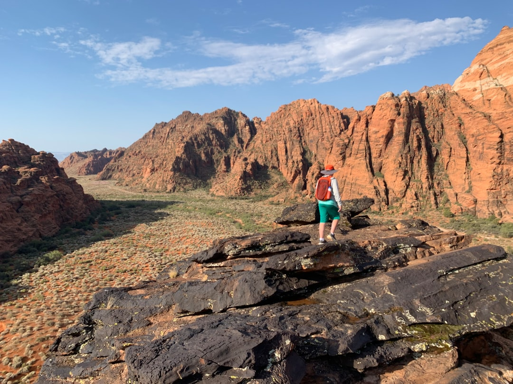
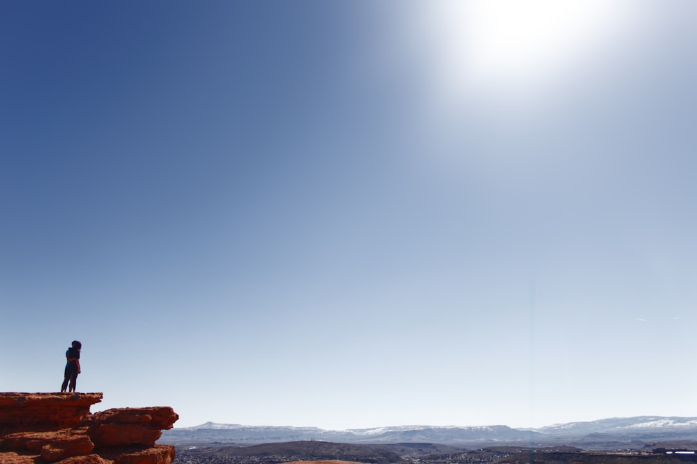
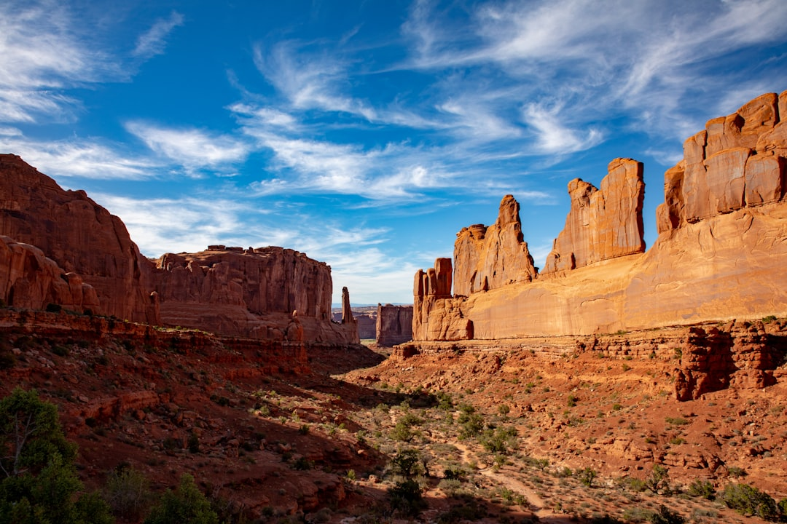
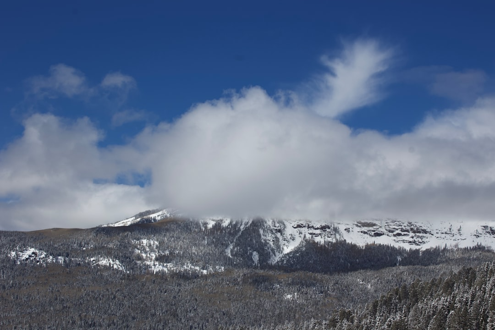

What to Know About St. George, Utah
St. George experiences moderate temperatures in October, making it ideal for outdoor activities. Expect less crowded trails and attractions compared to peak summer months.
Local customs: Residents are friendly and welcoming. It's common to greet locals with a smile or a simple 'hello.'
Best times of day: Mornings and late afternoons are ideal for outdoor activities. The temperatures are cooler and more comfortable for hiking.
Transportation quirks: Most attractions are easily accessible by car. Parking is available at most trailheads and sites.
Safety: Stay hydrated, especially during hikes, and be aware of changing weather conditions. Watch for wildlife while driving.
Crowd patterns: October sees fewer tourists compared to summer months. Popular attractions are less crowded, providing a more enjoyable experience.
Local etiquette: Respect nature by staying on designated trails and packing out what you pack in. Be courteous to fellow hikers and locals.



🧥 What to Expect
Typical October temperatures are around 77°F daytime and 55°F overnight. Expect fewer visitors compared to summer months, making for a more tranquil experience.
Current Weather🚗 Getting Here
Open in Google Maps →Take I-15 S, then merge onto UT-9 E towards St. George. This drive features scenic views of the Mojave Desert and a gradual descent into the red rock terrain surrounding St. George. Parking is available in town and at various trailheads.
🏔️ Top Attractions
⏰ Possible Daily Schedule
🎭 Cultural Events & Entertainment
St. George has a lively cultural scene in October, featuring various local events, art walks, and community gatherings. The area also hosts outdoor concerts and festivals, especially as the fall colors peak.
🍽️ Dinner Recommendations
Zion National Park
October 18, 2026
NPS / Ally O'Rullian
What to Know About Zion National Park
Zion National Park is best enjoyed in October with cooler temperatures and fewer crowds. Prepare for possible water conditions in The Narrows and be mindful of shuttle requirements to access certain areas.
Local customs: Respect the natural environment; pack out what you pack in. Follow Leave No Trace principles while hiking.
Best times of day: Early mornings are ideal for hiking to avoid crowds and heat. Late afternoons provide wonderful lighting for photography.
Transportation quirks: The park's shuttle system is essential for accessing major trailheads and attractions. Be prepared for potential wait times during busy hours.
Safety: Stay on marked trails and be cautious on rocky paths. Consider the weather, particularly if planning to hike in water.
Crowd patterns: Crowds are lighter in October compared to peak summer months, but weekends can still be busy. Arrive early for best parking options.
Local etiquette: Yield to hikers going uphill and maintain a respectful distance from wildlife. Keep noise levels down to preserve the natural experience.

🧥 What to Expect
Typical October temperatures are around 62°F daytime and 38°F overnight.
Current Weather🚗 Getting Here
Open in Google Maps →Travel via I-15 N and UT-9 E. The route features stunning red rock formations and a dramatic approach to the park entrance. Arrive early to secure parking.
🏔️ Top Attractions
⏰ Possible Daily Schedule
🎭 Cultural Events
Zion National Park in October features a remote setting with a focus on natural beauty and outdoor activities. Visitors can participate in ranger-led programs, including talks and guided tours, which provide insights into the park's ecology and history. The nearby town of Springdale offers a variety of local experiences, including art galleries and occasional live music at local venues.
🍽️ Dinner Recommendations
Bryce Canyon National Park
October 19–21, 2026
USFWS Mountain-Prairie
What to Know About Bryce Canyon National Park
Bryce Canyon National Park in October offers pleasant temperatures and fewer crowds. Be prepared for varying weather and bring layers for warmth during cooler evenings.
Local customs: Respect nature by staying on designated trails and following park rules.
Best times of day: Early mornings and late afternoons are ideal for hiking and photography. Sunsets and sunrises provide the best lighting.
Transportation quirks: Parking fills up quickly, especially at popular trailheads. Arrive early to secure a spot.
Safety: Stay hydrated while hiking and be aware of changing weather conditions. Carry a map and familiarize yourself with trail difficulties.
Crowd patterns: Expect higher visitor numbers on weekends, especially during peak leaf season. Weekdays generally offer a quieter experience.
Local etiquette: Maintain a respectful distance from wildlife and do not feed animals. Keep noise levels down to preserve the natural experience for all visitors.


🧥 What to Expect
Typical October temperatures are around 60°F daytime and 40°F overnight. Fall colors accentuate the landscape, with orange and gold hues contrasting against the red rock formations. The park sees fewer visitors compared to summer, allowing for a more tranquil experience. No shuttle service is required in October, and most trails remain accessible.
Current Weather🚗 Getting Here
Open in Google Maps →Drive northeast on US-89, then take UT-12 for a scenic approach through the stunning Red Canyon. Prepare for a few winding roads and picturesque views as you near the park entrance.
🏔️ Top Attractions
⏰ Possible Daily Schedule
🎭 Cultural Events
Bryce Canyon National Park offers a remote setting with a focus on natural beauty and outdoor activities in October. Visitors can participate in ranger-led programs, including talks and guided hikes, which provide insights into the park's unique geology and ecology. The nearest gateway town, Bryce Canyon City, has limited cultural events but may feature local dining options and occasional live music.
🍽️ Dinner Recommendations
Capitol Reef National Park
October 21–22, 2026
Ken Lund from Reno, Nevada, USA
What to Know About Capitol Reef National Park
Capitol Reef National Park in October offers pleasant weather for outdoor activities with fewer crowds compared to summer. Prepare for cooler evenings and bring layers for comfort.
Local customs: Respect the natural environment by staying on designated trails and practicing Leave No Trace principles.
Best times of day: Early morning and late afternoon are ideal for hiking and photography, avoiding the midday heat.
Transportation quirks: Roads can be narrow and winding. Use caution, especially in the park.
Safety: Stay hydrated and watch for changing weather conditions in the mountains.
Crowd patterns: Expect fewer visitors during October, making it easier to enjoy the park's attractions.
Local etiquette: Greet fellow hikers and park staff, and maintain a quiet demeanor to preserve the natural experience.


🧥 What to Expect
Typical October temperatures are around 61°F daytime and 41°F overnight. Crowds are manageable compared to summer peak season, making for a more pleasant experience. Check for seasonal trail conditions before heading out, as some may require caution due to loose rocks.
Current Weather🚗 Getting Here
Open in Google Maps →Take US-89 S to UT-12 E, which offers scenic views of canyons and rock formations. Approach the park from the north with a dramatic view of the Waterpocket Fold. Parking is available at the visitor center.
🏔️ Top Attractions
⏰ Possible Daily Schedule
🎭 Cultural Events
Capitol Reef National Park is a remote destination with a focus on natural beauty and outdoor activities. In October, visitors can participate in ongoing interpretive programs, including ranger-led talks and evening programs at the amphitheater. The nearest gateway town, Torrey, offers a few local events and gatherings, but options are limited during this time.
🍽️ Dinner Recommendations
What to Know About Moab
Moab in October offers pleasant temperatures and fewer crowds. This is an excellent time for outdoor activities and exploring the area's natural wonders.
Local customs: Respect the natural environment by staying on marked trails and practicing Leave No Trace principles.
Best times of day: Early mornings are ideal for avoiding crowds at popular attractions. Late afternoons provide great lighting for photography.
Transportation quirks: Parking can be limited at popular trailheads, especially on weekends. Consider arriving early or using shuttle services when available.
Safety: Stay hydrated while hiking and be aware of changing weather conditions. Carry a map or GPS, as cell service may be spotty.
Crowd patterns: Expect larger crowds at popular sites like Delicate Arch during peak hours. Visiting early or late in the day can help avoid the busiest times.
Local etiquette: Be courteous to fellow visitors by keeping noise levels down and yielding the trail to those going uphill. Always pack out what you pack in.


🧥 What to Expect
Typical October temperatures are around 70°F daytime and 46°F overnight. October brings vibrant fall colors that contrast with the red rock landscape. Crowds will be lighter compared to summer, making for a more enjoyable experience at popular sites. Most trails are accessible, but check for any seasonal closures.
Current Weather🚗 Getting Here
Open in Google Maps →Travel along US-191 N through scenic desert landscapes. The drive includes stunning views of sandstone formations and distant mountains. Arrive at the lodging with ample parking available.
🏔️ Top Attractions
⏰ Possible Daily Schedule
🎭 Cultural Events
Moab in October has a relaxed cultural scene with opportunities for outdoor activities and local gatherings. Visitors can enjoy the natural beauty of the surrounding parks while exploring the town's art galleries and shops. The area is popular for hiking, mountain biking, and stargazing under clear autumn skies.
Local tip: Check out the local farmers market on Saturday mornings for fresh produce and handmade goods. It's a great way to experience the community vibe. More info
🍽️ Dinner Recommendations
What to Know About Telluride
Expect cool, crisp fall weather in Telluride. Prepare for potential temperature fluctuations with layers and be mindful of changing trail conditions.
Local customs: Respect the outdoor environment by following Leave No Trace principles, especially when hiking.
Best times of day: Mornings provide the best light for photography, particularly in the Historic District and hiking spots.
Transportation quirks: Parking can be limited in the historic district; consider using public transport or arriving early.
Safety: Stay hydrated while hiking and be aware of altitude sickness if you are coming from lower elevations.
Crowd patterns: Late October sees fewer crowds compared to summer, but weekends can still be busy.
Local etiquette: Greet locals with a smile; friendliness is appreciated in this small mountain community.

🧥 What to Expect
Typical October temperatures are around 53°F daytime and 30°F overnight. Fall colors peak mid-October, with vibrant yellows and reds in the aspen trees. Expect moderate crowds as peak season concludes. Parking in the historic district may be limited, so plan to arrive early or consider public transport options.
Current Weather🚗 Getting Here
Open in Google Maps →Take US-191 S from Moab, then connect to CO-145 through stunning mountain scenery. The final approach to Telluride includes a dramatic descent into the valley. Parking is available at various lots throughout the town.
🏔️ Top Attractions
⏰ Possible Daily Schedule
🎭 Cultural Events
October in Telluride features a quiet cultural scene as the busy summer season winds down. While there are no specific ticketed events during your travel dates, the town maintains a vibrant atmosphere with local art galleries and outdoor activities. Visitors can enjoy the fall foliage and the crisp mountain air, making it a pleasant time to explore the area.
Local tip: Check out the local farmers market on Saturday morning for fresh produce and handmade goods. It's a great way to experience the community and support local vendors. More info
🍽️ Dinner Recommendations
Pagosa Springs
October 26–27, 2026
Jeremiah Barnett
What to Know About Pagosa Springs
Pagosa Springs offers a mix of outdoor activities and relaxation in October. Expect cooler temperatures and fewer crowds than summer, making it an ideal time for hiking and soaking in the hot springs.
Local customs: Pagosa Springs has a friendly, laid-back atmosphere. It's common for locals to greet visitors with a smile and a friendly conversation.
Best times of day: Mornings are great for hiking before temperatures rise. Evenings are perfect for enjoying hot springs and dining out.
Transportation quirks: Most attractions are accessible by car, but some hikes may require short drives to trailheads. Parking can fill up quickly on weekends.
Safety: Stay hydrated and be cautious of slippery trails in fall. Wildlife can be active, so keep a safe distance if encountered.
Crowd patterns: Expect lighter crowds during weekdays compared to weekends. Popular attractions may see more visitors on Saturdays.
Local etiquette: Respect the natural environment by staying on designated trails and disposing of waste properly. It's polite to thank locals for their recommendations.


🧥 What to Expect
Typical October temperatures are around 61°F daytime and 33°F overnight. Expect fewer crowds than summer, making popular sites more accessible. Some trails may have muddy conditions due to autumn rains, so prepare accordingly.
Current Weather🚗 Getting Here
Open in Google Maps →Take US-160 E from Telluride through beautiful mountain scenery, including views of the San Juan Mountains. The drive culminates in a scenic approach to Pagosa Springs, with ample parking available at your lodging.
🏔️ Top Attractions
⏰ Possible Daily Schedule
🎭 Cultural Events
Pagosa Springs in October features a relaxed cultural scene. Visitors can enjoy the natural beauty of the San Juan Mountains and the local hot springs. The town often hosts community gatherings and seasonal celebrations, but specific ticketed events are limited during this time.
🍽️ Dinner Recommendations
Santa Fe
October 27–29, 2026
Wendy Shervington
What to Know About Santa Fe
Santa Fe in late October presents a mix of fall colors and comfortable temperatures. Expect fewer crowds than during summer, making it a great time to explore museums and outdoor attractions.
Local customs: Pueblo culture is significant here; respect local customs and traditions when visiting indigenous sites.
Best times of day: Mornings are ideal for hiking, while afternoons are perfect for visiting galleries and museums.
Transportation quirks: Public transportation options are limited, so consider renting a car for convenience.
Safety: Stay hydrated and wear sunscreen while hiking, as the sun can be strong even in fall.
Crowd patterns: Weekends may attract more visitors, particularly to popular attractions and dining spots.
Local etiquette: Always ask for permission before photographing locals, especially in traditional attire.


🧥 What to Expect
Typical October temperatures are around 63°F daytime and 43°F overnight. Autumn colors paint the landscape with vibrant hues as the leaves turn. Fall crowds are lighter than summer, providing a more relaxed atmosphere. Some attractions may have adjusted hours for the season, so check ahead.
Current Weather🚗 Getting Here
Open in Google Maps →Take US-160 E and NM-84 N for a scenic drive through the San Juan Mountains. The route features picturesque views and includes a stretch alongside the Rio Grande. Arrive in Santa Fe with easy access to parking near the Plaza.
🏔️ Top Attractions
⏰ Possible Daily Schedule
🎭 Cultural Events
Santa Fe in October features a rich cultural scene with ongoing art markets and local galleries showcasing Native American art. The city is known for its vibrant arts community, with many venues hosting live music and performances throughout the month. Expect to find a variety of cultural experiences, even without specific ticketed events.
🍽️ Dinner Recommendations
↩️ Departure Route Options
Open in Google Maps →Return anchor: Oct 29 2:30 PM
🎒 Packing Summary (Trip-Wide)
Here's what to bring and where it's needed:
- camera (Santa Fe)
- comfortable walking shoes (Santa Fe)
- hiking boots (Bryce Canyon National Park, Capitol Reef National Park, Moab, Pagosa Springs, Telluride)
- hiking shoes (St. George, Utah)
- layered clothing (Santa Fe)
- layered clothing for changing temperatures (Telluride)
- layers for warmth (Bryce Canyon National Park, Capitol Reef National Park)
- light jacket (Moab, Pagosa Springs, St. George, Utah)
- snacks (Bryce Canyon National Park, Capitol Reef National Park, Pagosa Springs)
- sun protection (Moab)
- sunscreen (St. George, Utah, Telluride)
- water bottle (Bryce Canyon National Park, Capitol Reef National Park, Moab, Pagosa Springs, Santa Fe, St. George, Utah, Telluride)